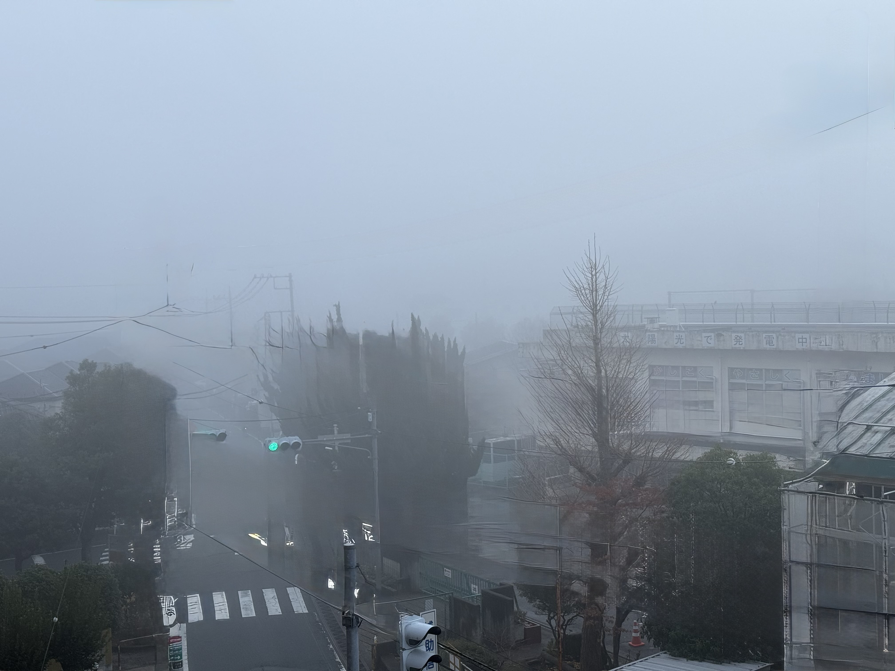
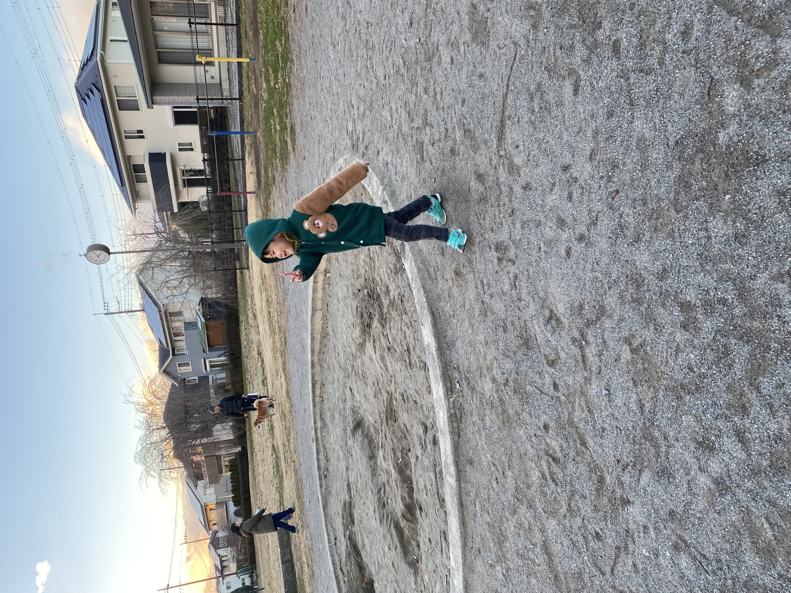

写真集 1
管理人：つねちゃん
スマートフォンで切り取った、日々の断片。

見上げる東京タワー
2025年1月26日
足元から見上げると、いつもの塔が少し違って見えた。

冬晴れの街と富士山
2025年1月26日
街の向こうに、揺るがない白さが静かにあった。

緑に包まれた山寺
2025年6月25日
岩と木と建物が、同じ時間を生きているようだった。

朝の月
2025年12月17日
夜が去ったあとも、月だけがしばらく空に残っていた。

夏の花火
2025年8月2日
一瞬だけ、空が記憶を持ったように光った。

がんばった証
2025年11月7日
痛みも涙も、今日の出来事。それも大切な一枚。

春の紫、ふわり
2022年5月8日（八ケ崎）
近所の春が、ここにあった。

黄色の元気
2022年5月8日（八ケ崎）
花は、ちいさな太陽。

旅の途中、小海駅
2022年7月3日
次の景色へ、深呼吸。

江戸川の菜の花
2022年3月30日
橋の下にも、季節が広がる。

空が高い、野辺山駅
2022年7月3日
駅が、景色の一部だった。

佐久平、広い空の駅前
2022年7月3日
旅の終わりと始まりが同居する。

霧に沈む朝
音が遠くなり、街が一枚の写真になった。

公園の帰り道
小さな足音と、冬の空気。

年末の食卓
並んだ皿が、一年の終わりを語っていた。